Some product photos on this site are representative images from Wikimedia Commons, used under the licenses listed below. Images have been resized. They may not show the exact item supplied. Product illustrations on this site are original artwork by Texas Research Supplies. Confirm specifications when you request a quote.
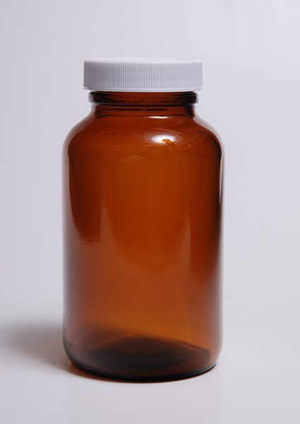 | Acetonitrile, LC-MS Grade, N-Methyl-2-Pyrrolidone (NMP), Anhydrous Brown glass bottle.jpg by Lilly_M · CC BY-SA 3.0 |
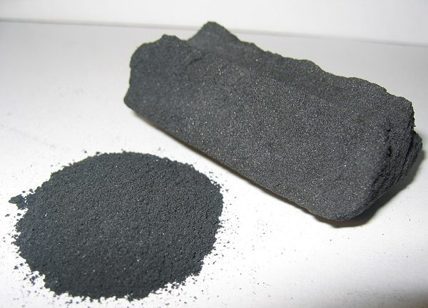 | Activated Carbon for Supercapacitors Activated Carbon.jpg by Ravedave (talk) · CC BY 2.5 |
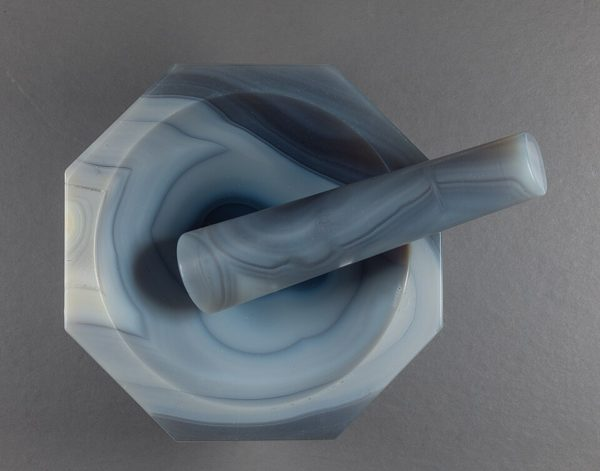 | Agate Mortar and Pestle Mortar-agate hg.jpg by Hannes Grobe · CC BY-SA 4.0 |
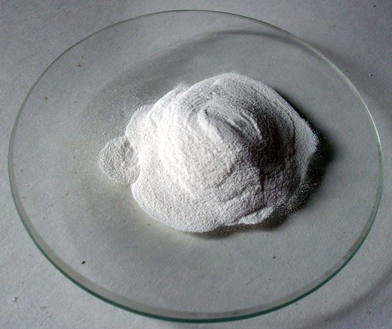 | Alumina (Al₂O₃) Nanoparticles, ~50 nm Oxid hlinitý.JPG by Ondřej Mangl · Public domain |
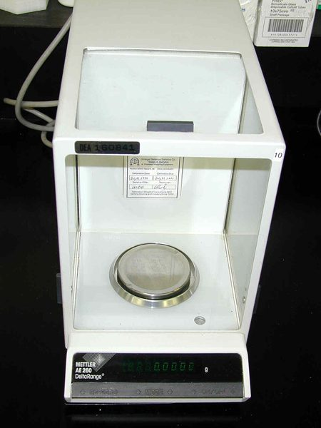 | Analytical Balance, 0.1 mg Readability Analytical balance mettler ae-260.jpg by US DEA · Public domain |
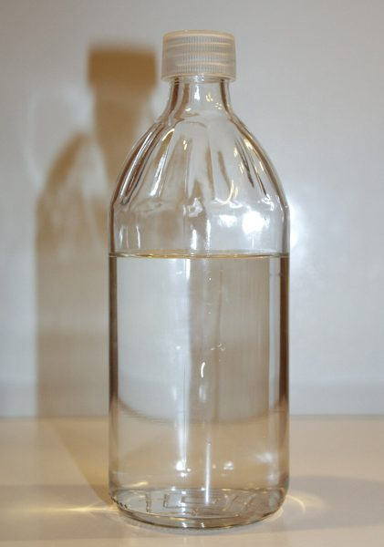 | Anhydrous Ethanol, HPLC Grade Sample of Absolute Ethanol.jpg by LHcheM · CC BY-SA 3.0 |
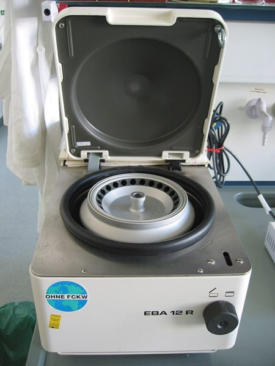 | Benchtop Centrifuge Tabletop centrifuge.jpg by Magnus Manske · CC BY 1.0 |
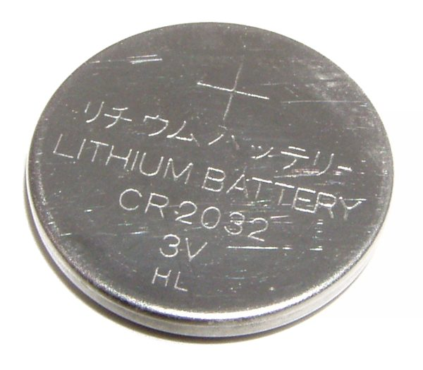 | Coin Cell Parts Kit (CR2032), CR2032 Coin Cell Cases Battery-lithium-cr2032.jpg by Krzysztof Woźnica - KyloDee · Public domain |
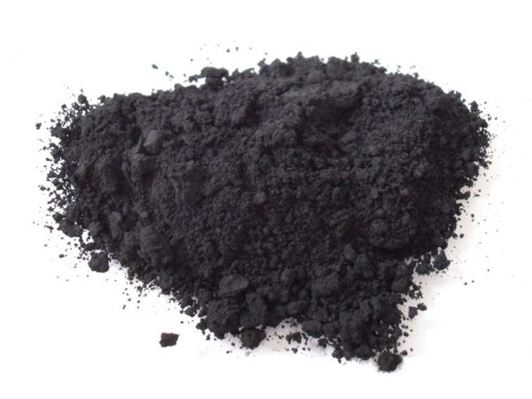 | Conductive Carbon Black Additive Carbon black.jpg by FK1954 · Public domain |
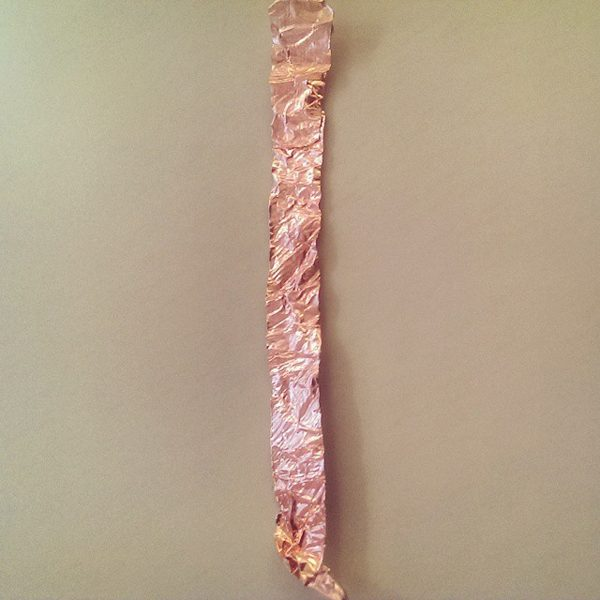 | Copper Foil, Battery Grade CopperFoil.jpg by Lloyd Davis from London, UK · CC BY-SA 2.0 |
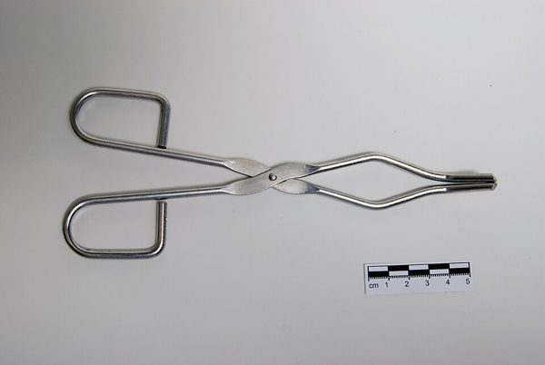 | Crucible Tongs Crucible-tongs-01.jpg by Lilly_M · CC BY-SA 3.0 |
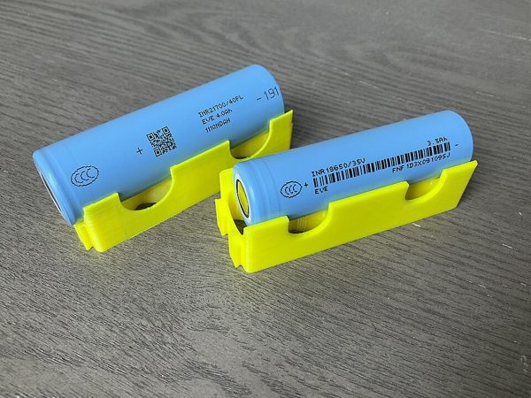 | Cylindrical Cell Cases (18650 / 21700) 18650 and 21700 lithium ion battery cell.jpg by Sevenethics · CC0 |
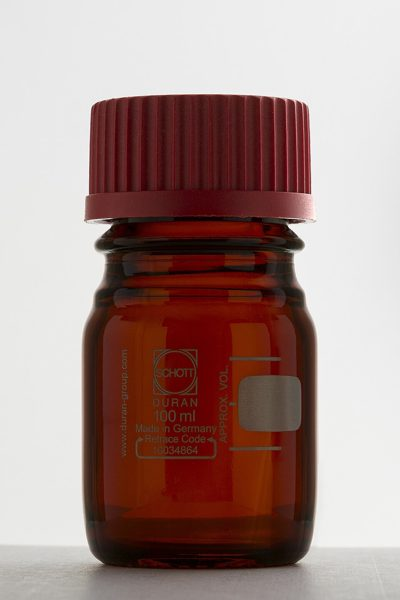 | Dimethyl Sulfoxide (DMSO), Cell Culture Grade DURAN® laboratory bottle amber 100ml.jpg by Lucasbosch · CC BY-SA 3.0 |
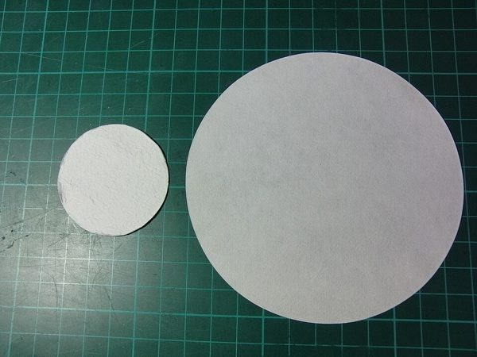 | Glass Fiber Separator Discs Filters (Left Glass fiber) (Right Paper).jpg by GOKLuLe · CC BY-SA 3.0 |
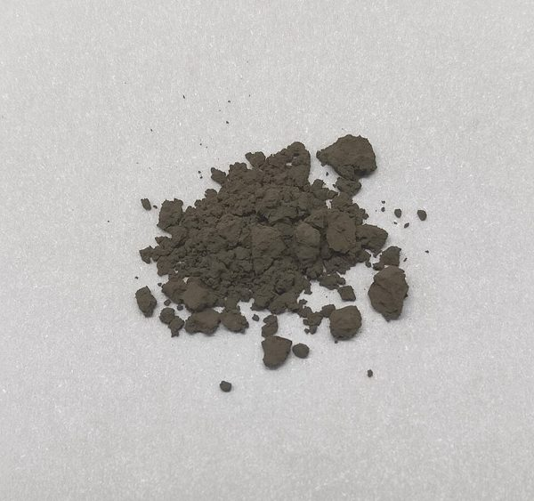 | Graphene Oxide Dispersion, 4 mg/mL Sample of graphene oxide.jpg by Leiem · CC0 |
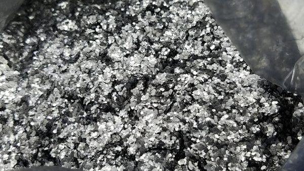 | Graphite Anode Powder, Battery Grade Flake graphite.png by 2x910 · CC BY-SA 4.0 |
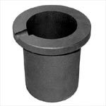 | Graphite Crucible with Lid Graphite crucible image.jpg by Vladnov · CC BY-SA 3.0 |
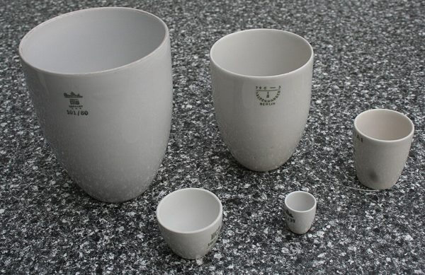 | High-Purity Alumina Cylindrical Crucible Porzellantiegel.jpg by Gmhofmann · CC BY-SA 3.0 |
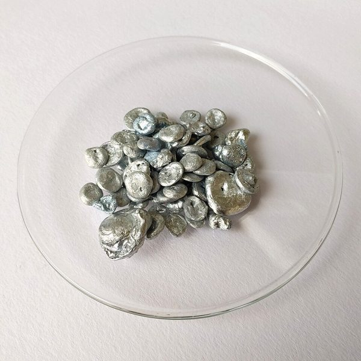 | High-Purity Zinc Pellets Zinc sample.jpg by Nefronus · CC0 |
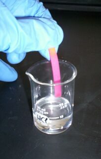 | Hydrochloric Acid, Trace Metal Grade Hydrochloric acid 01.jpg by Unknown author · Public domain |
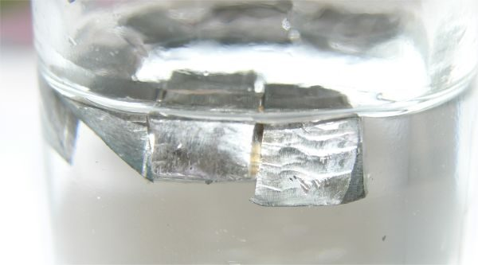 | Lithium Metal Discs Lithium paraffin.jpg by Tomihahndorf at German Wikipedia · Public domain |
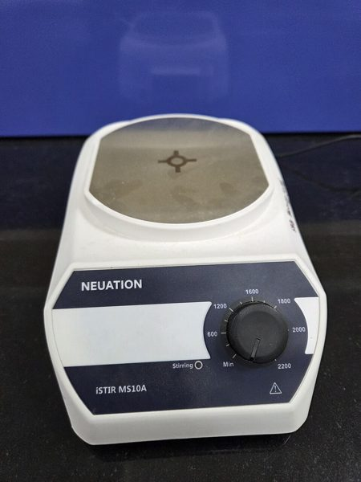 | Magnetic Stirring Hot Plate Magnetic stirrer (15549).jpg by Gannu03 · CC BY-SA 4.0 |
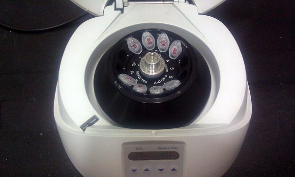 | Micro Centrifuge Minicentrifuge.jpg by Microrao · CC BY-SA 4.0 |
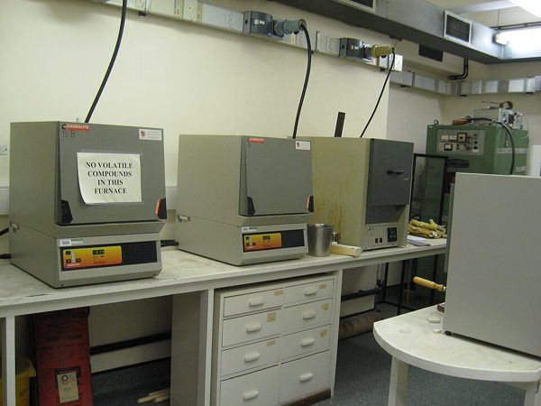 | Muffle (Box) Furnace, 1200 °C Muffle furnaces.jpg by Brammers · CC0 |
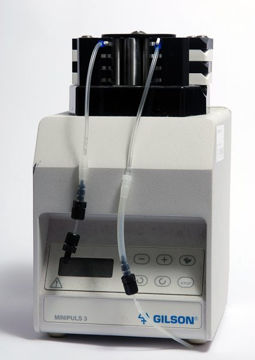 | Peristaltic Pump, Variable Speed Laboratory peristaltic pump Gilson-01.jpg by Lilly_M · CC BY-SA 3.0 |
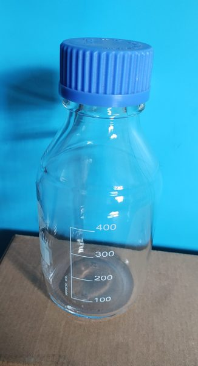 | Phosphate Buffered Saline (PBS), 10x Reagent bottle.jpg by Srini297 · CC BY-SA 4.0 |
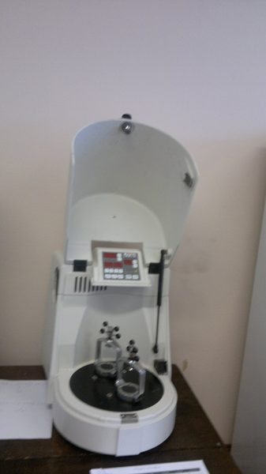 | Planetary Ball Mill Planetary ball mill.jpg by Cezare08 · CC BY-SA 3.0 |
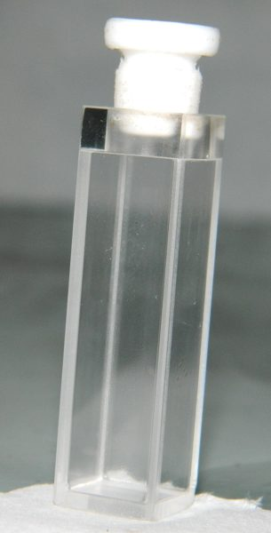 | Quartz Cuvettes, 10 mm Path Quartz Cuvette.JPG by Sobarwiki · Public domain |
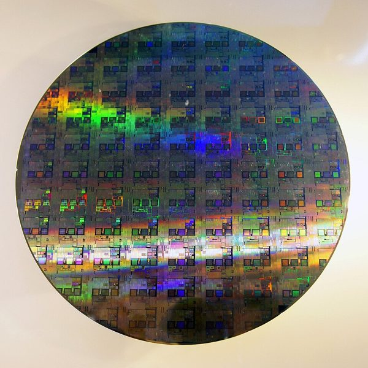 | Silicon Wafers 12-inch silicon wafer.jpg by Peellden · CC BY-SA 3.0 |
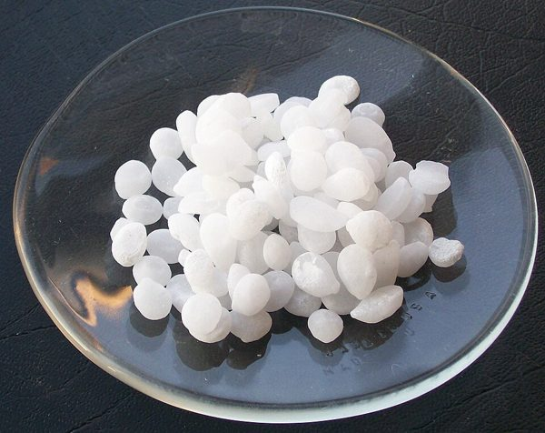 | Sodium Hydroxide Pellets, ACS Grade SodiumHydroxide.jpg by Walkerma · Public domain |
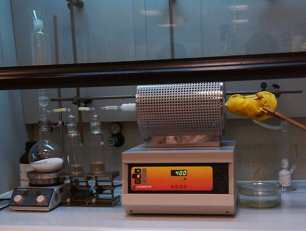 | Tube Furnace, 1200 °C Horno tubular.jpg by Manuel Almagro Rivas · CC BY-SA 4.0 |
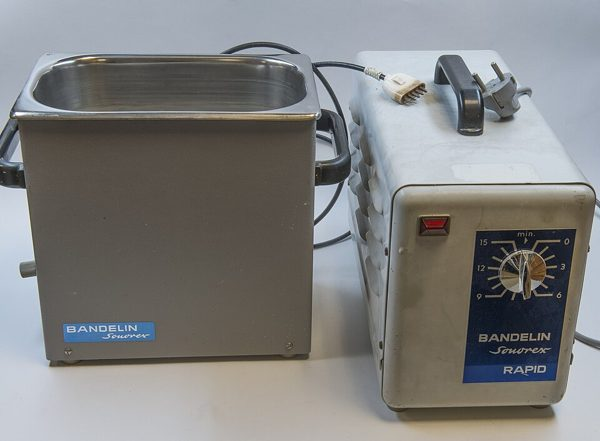 | Ultrasonic Cleaning Bath, 3 L Bandelin-sonorex hg.jpg by Hannes Grobe · CC BY 3.0 |
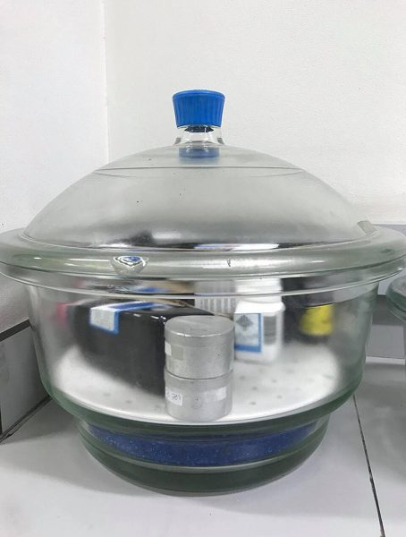 | Vacuum Desiccator, 300 mm Vacuum desiccator chemical storage.jpg by Bamrsykp · CC BY-SA 4.0 |
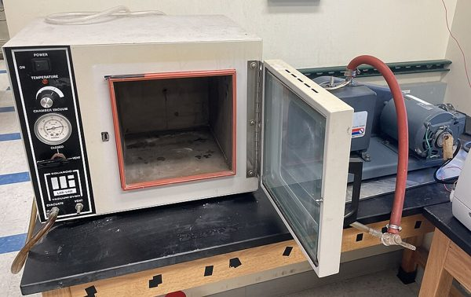 | Vacuum Drying Oven Vacuum oven.jpg by Smokefoot · CC BY 4.0 |
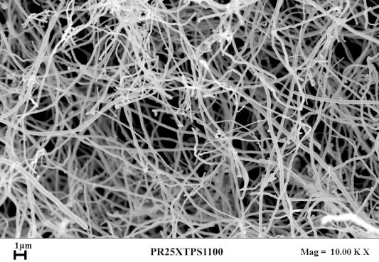 | Vapor-Grown Carbon Fiber Additive Carbon nanofibers.jpg by Liberata Guadagno et al. · CC BY 3.0 |
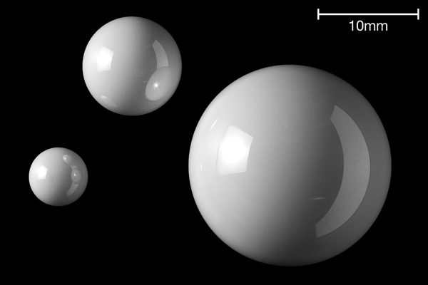 | Zirconia (YSZ) Milling Balls Zirconium dioxide ZrO2 bearing balls.jpg by Lucasbosch · CC BY-SA 3.0 |


_(Right_Paper).jpg){kind=link}


.jpg){kind=link}